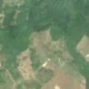
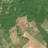

2,9 ha · Dumitra
văzută schimbată prima dată pe 15 aug. 2026


Nu am găsit nicio autorizație de tăiere în jur.
Terenul: în afara amenajamentelor silvice publicate (pășune, mal de apă sau pădure privată fără amenajament în registru).
Ce se vede în poze: În poza detaliată din 2022 zona marcată era acoperită de pădure deasă, iar în pozele «înainte» și «după» apare un petic deschis, de culoare deschisă, cu margini destul de clare, lipit de alte goluri din pădure. Asta arată că arborii au fost tăiați, dar nu e sigur dacă tăierea s-a făcut chiar în intervalul alertei.